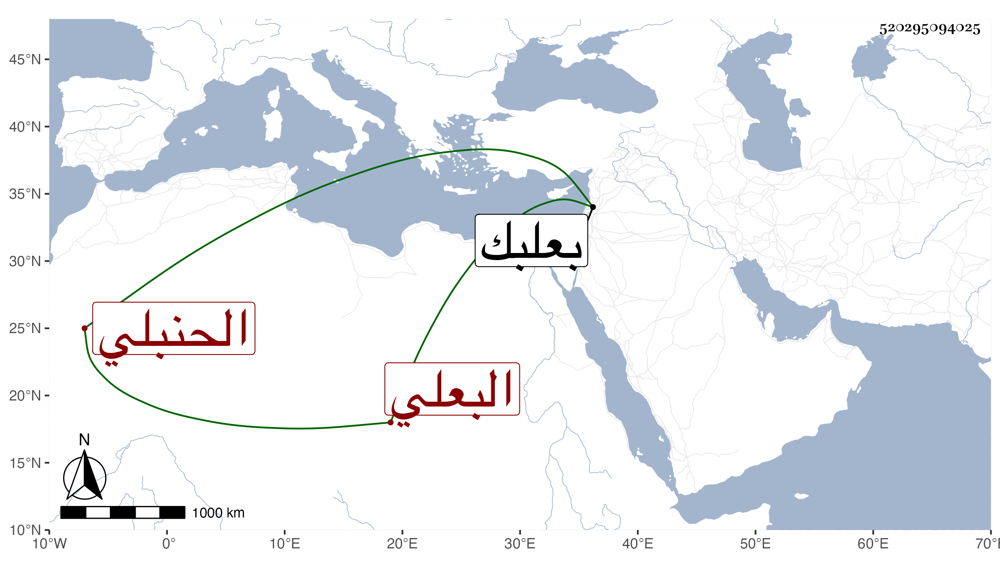

0902Sakhawi.DawLamic.ITO20230111-ara1.EIS1600.520295094025
Biography ID: 520295094025
364
محمد بن محمد بن علي بن أحمد بن محمد الكمال بن البدر البعلي الحنبلي ابن أخي الشمس محمد البعلي ويعرف بن اليونانية . ولد في ثاني عشر ربيع الأول سنة اثنتين وخمسين وسبعمائة وأحضر في الرابعة على بشر بن إبراهيم البعلي فضائل شعبان لعبد العزيز الكنتاني . وأجاز له في سنة سبع وخمسين العرضي وابن نباتة والعلائي والبياني وابن القيم وابن الجوخي وآخرون وحدث سمع منه الفضلاء كابن موسى ومعه الموفق الأبي وذلك في سنة خمس عشرة . ذكره شيخنا في معجمه وقال أجاز لنا من بعلبك . وكذا ذكره في الأنباء لكن بزيادة محمد ثالث والصواب إسقاطه وقال أنه سمع وقرأ ودرس وأفتى وشارك في الفضائل مع المعرفة بأخبار أهل بلده . مات سنة خمس عشرة .
